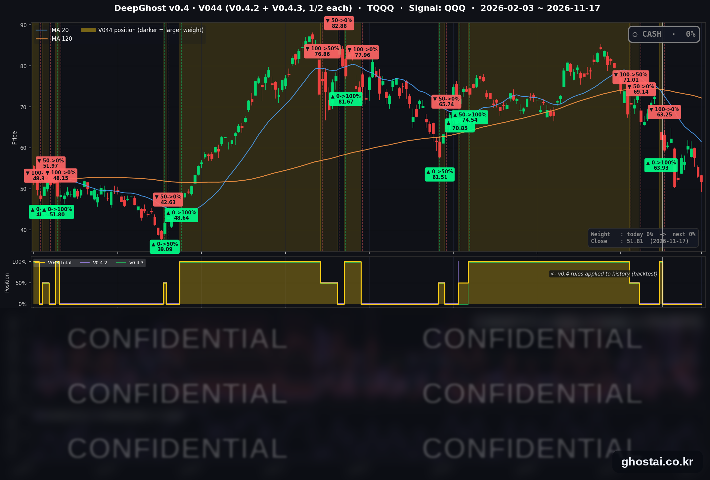

S&P 500 200일선 아래로, 엔비디아 실적 예상 상회
· Ghost.AI 데일리 리포트
👻 매일 시그널과 히스토리를 홈페이지에서 한눈에 → www.ghostai.co.kr
회원 페이지 안내 — 회원 가입 데일리 레포트의 "오늘의 매매 신호"는 26년 12월 31일까지만 제공됩니다. 이후는 회원 페이지(무료) 에서 확인하시기 바랍니다.
국가안보국(NSA) 네트워크 장애 보도 뒤 지수가 장중 크게 밀렸고, S&P 500 은 1.03% 내려 4월 7일 이후 처음 200일선 아래에서 마감했습니다. 다우는 1.64% 내렸습니다. 소프트웨어주가 크게 내린 반면 반도체주는 장중 저점에서 대부분 회복해, 나스닥(-0.74%)과 QQQ(-0.73%)는 덜 내렸습니다. 금리는 내렸고 VIX 는 25.46 으로 나흘 연속 올랐습니다. 장 마감 뒤 엔비디아 실적은 예상을 넘었습니다. TQQQ 는 2.30% 내렸고, 전략은 현금 보유 중입니다.
📊 오늘의 매매 신호
| 항목 | 내용 |
|---|---|
| 오늘의 신호 | 🟡 신규 신호 없음 — 전략은 현금 보유를 유지합니다 |
| 포지션 상태 | 💵 현금 보유 중 (OUT OF POSITION) |
| 최근 매매 | 10월 19일 $71.01 매도 → 10월 30일 $63.93 매수 · 11월 2일 $63.25 매도(-1.06%) |
| 현금 보유 기간 | 2026-11-02 ~ 2026-11-17 (12거래일, 11월 2일 시가 매도 후) |
| TQQQ 종가 | $51.81(-2.30%) |
TQQQ 시그널 — OUT OF POSITION
현재 상태: 현금 보유 중 | 전략 비중 0% → 다음 거래일 0%

전략은 10월 19일 시가 71.01달러에 TQQQ 를 매도했습니다. 10월 30일 시가 63.93달러에 다시 샀지만 11월 2일 시가 63.25달러에 매도해 1.06% 손실로 마쳤고, 그 뒤로 현금 보유 중입니다. 11월 17일에도 새 신호는 나오지 않았습니다.
TQQQ 는 2.30% 내린 51.81달러로 마감해 11월 5일 이후 가장 낮은 종가를 기록했습니다. 4거래일 연속 내려 11월 12일 종가보다 13.48% 낮고, 6월 2일 최고 종가(87.22달러)보다는 40.60% 낮습니다. 10월 19일 매도가보다는 27.04%, 11월 2일 매도가보다는 18.09% 낮은 가격입니다.
오늘 미국 시장 — 시황 요약
지수 마감
| 지수 | 종가 | 등락률 |
|---|---|---|
| S&P 500 | 7,340.53 | -1.03% |
| 나스닥 종합 | 24,328.38 | -0.74% |
| 다우존스 | 50,759.42 | -1.64% |
| 러셀 2000 (IWM) | 269.05 | -1.43% |
| QQQ (나스닥100) | 656.95 | -0.73% |
| 반도체 ETF (SOXX) | 141.46 | +0.17% |
| TQQQ | 51.81 | -2.30% |
지수는 전일 종가 부근에서 출발해 장중 크게 밀린 뒤 일부 회복했습니다. 나스닥은 장중 -2.12% 까지 내려 4월 16일 이후 가장 낮은 장중 저점을 찍었다가 -0.74% 로 마감했고, QQQ 도 장중 -2.28% 에서 -0.73% 로 회복했습니다. 다우는 회복 폭이 작았습니다.
S&P 500 은 200일선보다 0.05%, 다우는 0.04% 낮게 마감해 둘 다 4월 7일 이후 처음 200일선 아래 종가를 기록했습니다. 나스닥은 200일선보다 3.25% 아래입니다. 나스닥·S&P 500·QQQ·IWM 모두 4거래일 연속 내렸고, S&P 500 종가는 7월 29일 이후, 다우 종가는 6월 10일 이후 가장 낮습니다. 10월 6일 최고 종가와 비교하면 S&P 500 은 6.12%, 나스닥은 11.85% 낮습니다.
국채 금리 동향
| 만기 | 11/16 종가 | 11/17 종가 | 전일 대비 |
|---|---|---|---|
| 3개월 | 4.125% | 4.138% | +1.3bp |
| 5년 | 4.935% | 4.900% | -3.5bp |
| 10년 | 5.121% | 5.103% | -1.8bp |
| 30년 | 5.467% | 5.458% | -0.9bp |
5년물·10년물이 이틀 연속 내렸습니다. 10년물은 오전 10월 소매판매 발표 뒤 5.15% 부근까지 올랐다가 주가가 밀리면서 5.10% 로 내려왔습니다. 미 재무부 기준 2년물은 4.80% 로 3bp 내렸습니다. 3개월물은 올라 가까운 시기 인상 전망은 그대로이고, 10년-3개월 스프레드는 96.5bp 로 역전은 없습니다. 금리가 내린 날 주가가 내렸으므로 이날 하락의 원인은 금리가 아닙니다.
연준 발언 & 금리 패스
- 무살렘 세인트루이스 연은 총재 (11월 17일): 2027년 봄 전까지 "여러 차례" 금리 인상이 필요할 가능성이 높다고 말했습니다. 물가가 높을 뿐 아니라 품목 전반으로 퍼져 있다고 했습니다. 매파적 발언이지만 무살렘은 이번 기간 투표권이 없습니다.
- 월러 이사 (11월 17일): 토큰화·스테이블코인과 결제 인프라를 다뤘고 통화정책 언급은 없었습니다(중립).
- 금리 경로: 12월 인상은 이미 시장에 반영돼 있다는 평가가 있어 발언 직후 금리 반응은 크지 않았습니다. 기준금리는 3.75~4.00% 이고, 다음 회의는 12월 8~9일입니다. 11월 18일 14:00 에 10월 FOMC 의사록이 나옵니다.
오늘의 핵심 이슈
- NSA 네트워크 장애 보도 뒤 S&P 500 이 200일선 아래로 내려왔습니다. CNN 이 국가안보국 기밀 네트워크가 멈췄다고 보도한 뒤 낙폭이 커졌고, 다우는 장중 1,000포인트 넘게 밀렸습니다. NSA 는 정기 점검 중 일시적 성능 저하라고 밝혔고 사이버 공격 흔적은 없다고 전해졌습니다. S&P 500 구성종목 493개 중 74개만 올랐습니다.
- 소프트웨어주는 크게 내렸고 반도체주는 장중 저점에서 회복했습니다. 세일즈포스는 9.45% 내려 2024년 5월 30일 이후 하루 하락 폭이 가장 컸고, 인튜이트(-7.17%)·서비스나우(-6.51%)도 크게 내렸습니다. AI 에이전트가 사용자 수 기준 과금 모델을 흔든다는 우려와 앤트로픽 상장 자금 마련 매도가 이유로 꼽혔습니다. 반면 SOXX 는 장중 -3.58% 에서 +0.17% 로, 마이크론은 -7.25% 에서 -0.92% 로 회복했고 브로드컴은 2.46% 올랐습니다.
- 엔비디아 3분기 실적이 예상을 넘었습니다. 장 마감 뒤 발표한 3분기 매출은 1,158억 달러, 데이터센터 매출은 1,076억 달러로 1년 전보다 110% 늘었습니다. 조정 EPS 2.68달러, 4분기 매출 가이던스 1,300억 달러 ±3% 도 예상보다 높았습니다. 다만 4분기 총이익률 가이던스(71~72%)는 3분기보다 낮습니다. 주가는 정규장에서 0.44% 내린 155.46달러(2025년 7월 1일 이후 최저 종가)로 마감한 뒤 시간외에서 2~3% 올랐습니다.
변동성 & 투자심리
VIX 는 11.13% 오른 25.46 으로 마감해 11월 6일 이후 가장 높은 종가를 기록했고, 나흘 연속 올랐습니다. 장중에는 27.73 까지 올랐습니다. 공포탐욕 지수는 25(공포)로 전일 31, 1주 전 37, 1개월 전 18(극단적 공포)입니다(feargreedmeter.com 표시값, 참고용). 지수 낙폭보다 종목 중간값(-1.35%)이 더 컸고 S&P 500 종목의 85% 가 내려 시장 분위기는 비관 쪽입니다. 다만 반도체·AI 하드웨어는 장중 저점에서 회복했습니다.
매크로 & 원자재
| 품목 | 종가 | 등락률 |
|---|---|---|
| WTI 선물 | $85.58 | -0.16% |
| 브렌트 선물 | $92.87 | +0.47% |
| 원유 ETF (USO) | $140.24 | +0.15% |
| 금 선물 | $3,856.80 | +0.10% |
| 금 ETF (GLD) | $352.48 | -0.13% |
원유·금 모두 하루 변동이 1% 미만이었습니다. 10월 소매판매는 전월 대비 +0.2% 로 예상과 같았고, 자동차를 뺀 통제 그룹은 +0.6% 로 예상을 넘었습니다. 10월 수입물가는 +1.1% 로 예상(0.7%)보다 높았고, 10월 산업생산은 -0.4% 였습니다.
주요 종목 동향
| 종목 | 종가 | 등락률 | 비고 |
|---|---|---|---|
| AVGO | 341.60 | +2.46% | 커버리지 상승률 1위 |
| TSLA | 380.11 | +0.10% | |
| AMZN | 257.89 | +0.05% | |
| AAPL | 351.91 | -0.25% | |
| NVDA | 155.46 | -0.44% | 2025년 7월 1일 이후 최저 종가, 장 마감 뒤 실적 예상 상회·시간외 2~3% 상승 |
| INTC | 55.17 | -0.54% | 장중 -5.50% 에서 회복 |
| MU | 712.42 | -0.92% | 장중 -7.25% 에서 회복 |
| QCOM | 166.67 | -1.10% | 반도체 장중 저점 뒤 회복 |
| META | 618.87 | -1.20% | |
| GOOGL | 280.20 | -1.24% | |
| NFLX | 59.68 | -1.76% | |
| MSFT | 506.24 | -2.27% | 9월 24일 이후 최저 종가, 소프트웨어 동반 약세 |
커버리지 12종목 중 3종목이 오르고 9종목이 내렸습니다. 반도체 4종목(NVDA·QCOM·INTC·MU)은 장중 저점이 -3.6~-7.3% 였지만 종가는 -0.4~-1.1% 였습니다.
다음 일정 (미 동부시간)
- 11/18(수) 엔비디아 실적에 대한 첫 정규장 반응 / 08:30 10월 주택착공·건축허가 / TJX·로우스·타깃 실적 / 13:35 바 이사 연설 / 14:00 10월 FOMC 의사록 / 앤트로픽 공모가 결정
- 11/19(목) 08:30 주간 실업수당 청구·필라델피아 연은 지수 / 09:25 제퍼슨 부의장 대담 / 14:15 바 이사 대담 / 앤트로픽 나스닥 거래 시작 예정 / 월마트 실적
- 11/20(금) 08:25 월러 이사 / 11월 미시간대 소비자심리 확정치 / 12:15 쿡 이사 연설 / 월간 옵션 만기
- 11/25(수) 14:00 베이지북
- 11/26(목) 추수감사절 휴장, 11/27(금) 13:00 조기 폐장
- 12/4(금) 08:30 11월 고용보고서
- 12/8~12/9 FOMC
Ghost.AI — Quantitative AI Investment
Model: DeepGhost v0.4 | Transformer-Based Deep Learning
Coverage: 14 tickers | Updated every trading day after US market close
⚠️ 본 자료는 정보 제공 목적으로만 작성되었으며 투자 권유가 아닙니다. 모든 투자의 책임은 투자자 본인에게 있습니다. 과거 성과가 미래 수익을 보장하지 않습니다.
[유의사항]
- 본 서비스는 불특정 다수를 대상으로 발행되는 단방향 정보 제공 서비스이며, 투자자 개인의 재산 상황·투자 목적·위험 선호도를 반영한 개별 투자 조언이 아닙니다.
- 고스트에이아이 주식회사는 고객과 쌍방향 의사소통(개별 상담, 맞춤형 자문 등)을 제공하지 않습니다.
- 본 콘텐츠는 투자 권유 또는 매매 주문의 청약·청약의 권유에 해당하지 않으며, 최종 투자 판단 및 그에 따른 손익의 책임은 전적으로 투자자 본인에게 있습니다.
고스트에이아이 주식회사